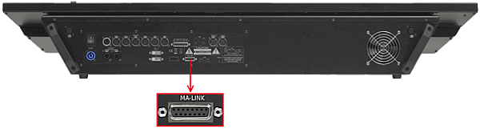

Connect grandMA2 fader wing
To extend the console by 15 motorized faders and 15 executor buttons, connect a grandMA2 fader wing.
Hint:
You can connect up to four grandMA2 fader wings to one grandMA2 console.
- Connect one end of a 15 pin D-Sub cable to the MA-LINK connector on the rear panel.
- Connect the other end to the grandMA2 fader wing.
The grandMA2 fader wing is connected to the console.

grandMA2 full-size MA-LINK connector
To configure the wings see wing & monitor setup.